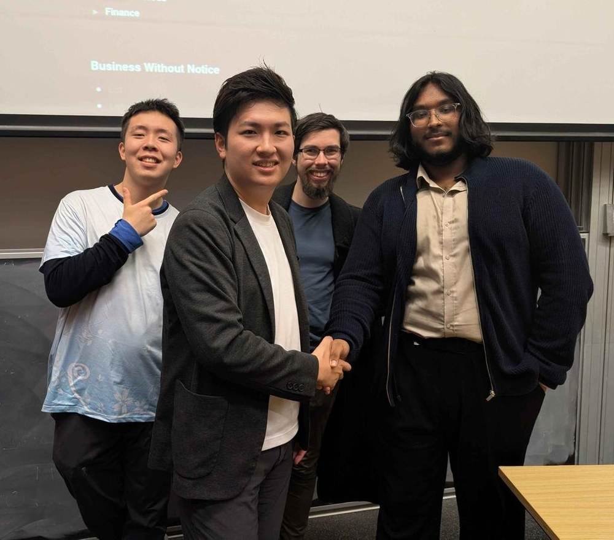
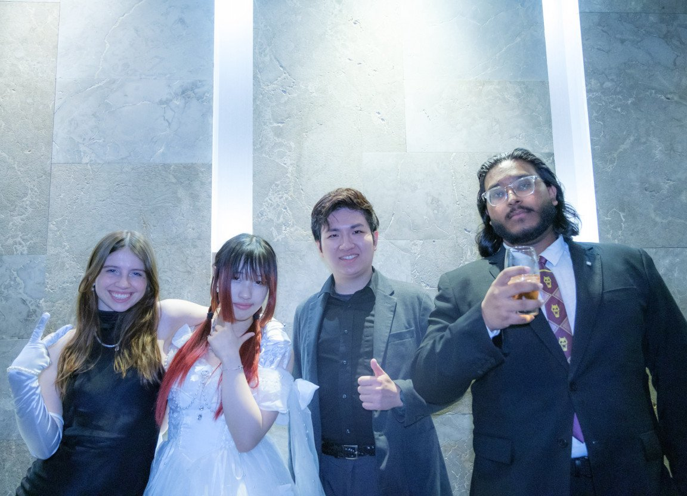

活動報告
2026.09.22
オーストラリアで国際交流をしてきました！

2026年9月、GUILDの役員がオーストラリア・シドニーを訪問し、現地の大学サークルと国際交流をしてきました！
ニューカッスル大学では公認サークル「GAC（Gaming & Anime Club）」の皆さんと現地で交流し、シドニー大学では公認アニメサークル「SUAnime」の役員会議に参加して、サークル間の連携が決まりました。10月からはオンラインでの共同企画が始まります。

さらに、シドニー工科大学でシドニー4大学のアニメサークル連合「AnimeSydney」の皆さんと協議して組織間連携をスタートし、9月20日には大型イベント「ECLIPSE MASQUERADE BALL（仮面舞踏会）」にも公式参加しました。
温かく迎えてくださったSUAnime、GAC、AnimeSydneyをはじめとする関係者の皆さん、ありがとうございました！これからもサブカルチャーで日豪の学生をつなぐ企画を展開していきます。